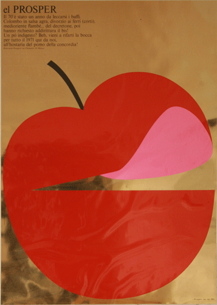
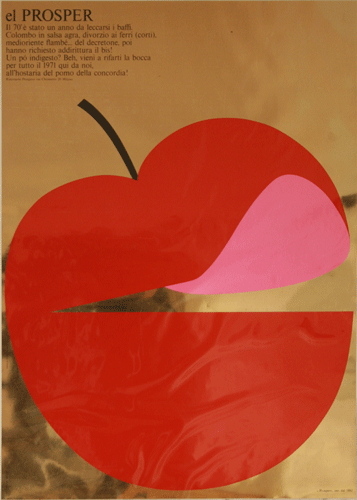

FISH
3 artifacts
3 artifacts
APPLE
32 artifacts
32 artifacts
OIL
2 artifacts
2 artifacts
PASTA
6 artifacts
6 artifacts
BANANA
2 artifacts
2 artifacts
CARROT
2 artifacts
2 artifacts
CAKE
3 artifacts
3 artifacts
EGG
11 artifacts
11 artifacts
VEGETABLES
2 artifacts
2 artifacts
The frequency of each type of food in AIAP
We are dedicated to find food visual items through AIAP platform and we found 74 artworks are related to the food topic.
We divide them into 26 food items and the size of each item is totally depending on the frequency of use based on our dataset.
You can click the item to find the artifact!
We divide them into 26 food items and the size of each item is totally depending on the frequency of use based on our dataset.
You can click the item to find the artifact!
Yummy


 
